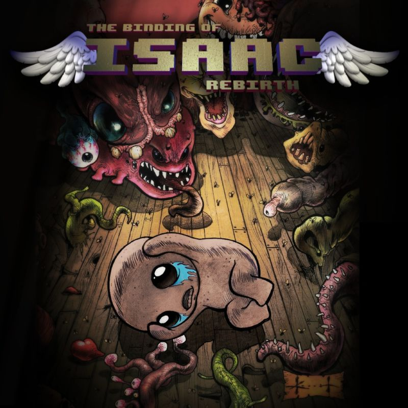

The Binding of Isaac
The Binding of Isaac is a randomly generated action RPG shooter with heavy Rogue-like elements. Following Isaac on his journey, players will find bizarre treasures that change Isaac’s form giving him super human abilities and enabling him to fight off droves of mysterious creatures, discover secrets, and fight his way to safety.
Review
The binding of Isaac is a top-down Legend of Zelda dungeon style roguelike. The introduction video paints a bleak picture of a child abused by his mother. His mother is overly religious to the point of being insane. One day she hears a voice demanding a sacrifice to prove her faith. Isaac escapes into the basement where the players journey begins. Levels, Items, and enemies are all randomly generated to create a never repeating experience. As items are collected the appearance of Isaac changes accordingly. Playthroughs can sometimes become difficult due to the players personal greed. Doors that injure players but have valuable loot inside create a risk vs. reward dichotomy. Players will debate whether they should hold onto as much health as possible for the boss fight or take damage to become stronger and more easily defeat a boss.